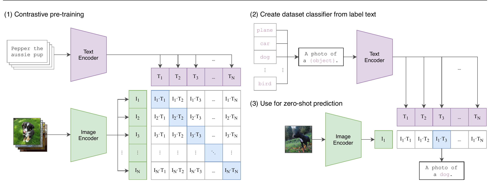
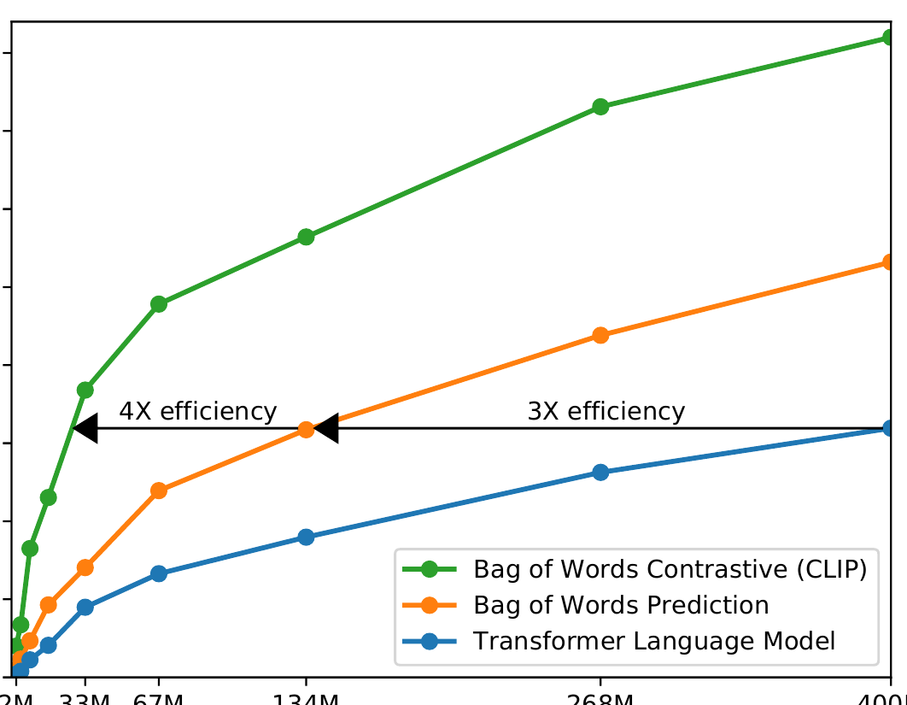
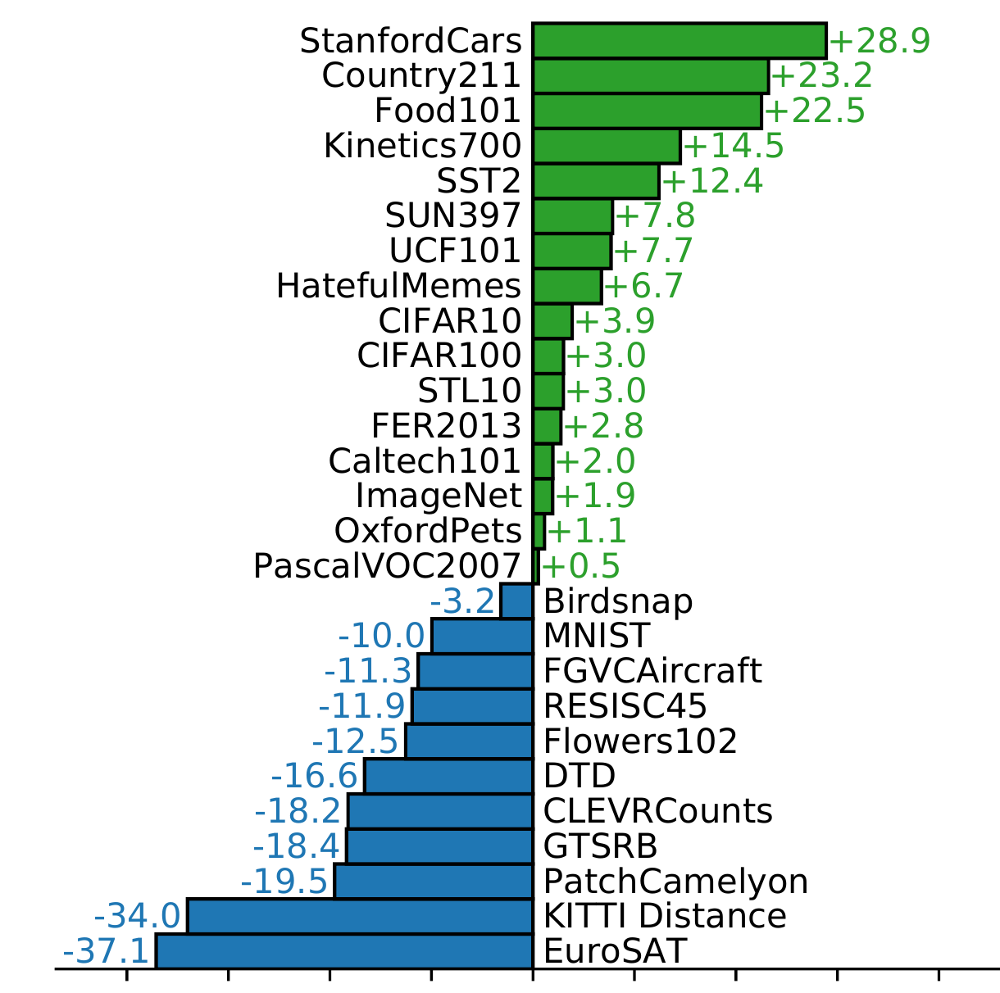

ICML 2021 · Radford et al.
CLIP: when a caption becomes a classifier
Learn why matching images to language in a shared space lets a model recognize new classes without training a new classifier—and why that flexibility is not the same as understanding.
The promise
Can an image model learn a label vocabulary that is not fixed in advance?
Ordinary supervised vision learns a closed menu: its final layer has one output for each training label. Want a new category? Collect labels and train again. CLIP changes the interface: it learns to align an image with text, then uses newly written class descriptions as the classifier.
An image of a golden retriever arrives with no task-specific training examples. Which part must change for CLIP to classify it as dog, bird, or plane?
Bridge from what you know
A batch is a matching game, not a label lookup.
Imagine three photographs and three handwritten captions shuffled on a desk. You know each photograph has exactly one partner. The useful question is not “which of 1,000 labels is this?” but “which caption belongs with this image?”
CLIP plays that game inside every batch. With N aligned image–text pairs, the diagonal of its N × N score matrix contains the observed pairs; the other N² − N pairings are contrastive negatives.

Mechanism
Two encoders negotiate one coordinate system.
Name the actors before the loss: image minibatch I has shape [N, h, w, c]; text minibatch T has shape [N, l]. Image encoder features are [N, dᵢ], text features are [N, dₜ], and learned projections place both in a shared dₑ-dimensional space.
Lesson diagram. Green diagonal cells are the observed pairings; every off-diagonal cell is a competing match.
The paper learns t, a log-parameterized temperature scale. It sharpens or flattens the softmax competition; it does not decide which pair is best by itself.
Worked trace
One matrix teaches both directions.
Suppose a batch has three pairs and the cosine similarities are:
For image 3, the correct caption is column 3. Its row logits are [4, 2, 7], so its correct probability is e⁷/(e⁴ + e² + e⁷) ≈ 0.946. But image 3 must also be the best match for caption 3: its column logits are [2, 3, 7], giving e⁷/(e² + e³ + e⁷) ≈ 0.976. Averaging image→text and text→image cross-entropies means neither encoder gets to be a passive lookup table.
An image has cosine similarity 0.8 with “dog” and 0.6 with “cat.” With scale 10, what probability does the dog prompt receive?
Why contrastive?
It learns the pairing faster than caption prediction in this experiment.
The paper first tried predicting captions. For the zero-shot ImageNet measurement, Figure 2 reports that a transformer language-model approach learned three times slower than the bag-of-words baseline; switching the latter to CLIP’s contrastive objective improved efficiency by a further factor of four.

Zero-shot transfer
Language writes the last layer at test time.
For each target class, CLIP encodes a textual template such as “a photo of a {object}.” Compare a new image embedding against those class-text embeddings and take the largest score. The authors also average over multiple prompt templates. That is why prompt wording is part of the classifier, not cosmetic copy.
| Step | What is fixed? | What is newly supplied? |
|---|---|---|
| Pre-training | Architecture is learned | 400 million image–text pairs |
| Zero-shot task | Image and text encoders | Class names/descriptions and prompt templates |
| Prediction | Embedding geometry | Highest image–prompt similarity |
In the paper’s terminology, zero-shot transfer means no dataset-specific gradient update—not no data or labels during pre-training.
Evidence and limits
Transfer is broad, but not a blank cheque.
The abstract reports 400 million WIT image–text pairs. On ImageNet, the paper reports 76.2% zero-shot accuracy for its best CLIP model, matching the original ResNet-50 without ImageNet’s 1.28 million labeled training examples. Across the 27-dataset comparison below, zero-shot CLIP exceeds the ResNet-50 linear probe on 16 datasets—but not all of them.

Failures worth remembering
The paper identifies weak zero-shot performance on specialist or abstract tasks including counting, traffic signs, satellite imagery, medical pathology, and distance estimation. It also demonstrates that label wording can change socially harmful outcomes: adding “child” to one class prompt substantially altered a reported age-related misclassification rate. A flexible text interface needs careful evaluation, not just clever prompts.
Active recall
Can you rebuild the idea without the page?
Why are there two cross-entropy losses?
Rows train each image to retrieve its matching text; columns train each text to retrieve its matching image. The symmetric objective trains both retrieval directions.
What makes the diagonal special in an N × N score matrix?
The diagonal contains the N observed image–text pairs. The N² − N off-diagonal scores are competing pairings within the batch.
How can a prompt become a classifier weight?
The text encoder maps each prompted class name into the shared embedding space. Comparing an image embedding to these vectors supplies class scores with no task-specific training update.
How is CLIP different from SimCLR?
SimCLR aligns two augmented views of one image; CLIP aligns images with language. Language makes the target concepts directly queryable.
What does CLIP not establish?
It does not show that web-scale image–text alignment guarantees robust reasoning, fairness, counting, specialist competence, or clean evaluation free of data overlap and tuning effects.
Connect it to your mental map
CLIP changes what “a label” can be.
SimCLR gives the contrastive geometry: pull matched views together and separate alternatives. CLIP changes the partner modality from another image view to language, turning that geometry into a semantic interface. BERT established pretrain-then-adapt for text; CLIP lets a pretrained text encoder specify a visual task at inference time. The result is also a bridge from CNN-based vision lessons to ViT: the image encoder can be either, while the central idea remains cross-modal alignment.